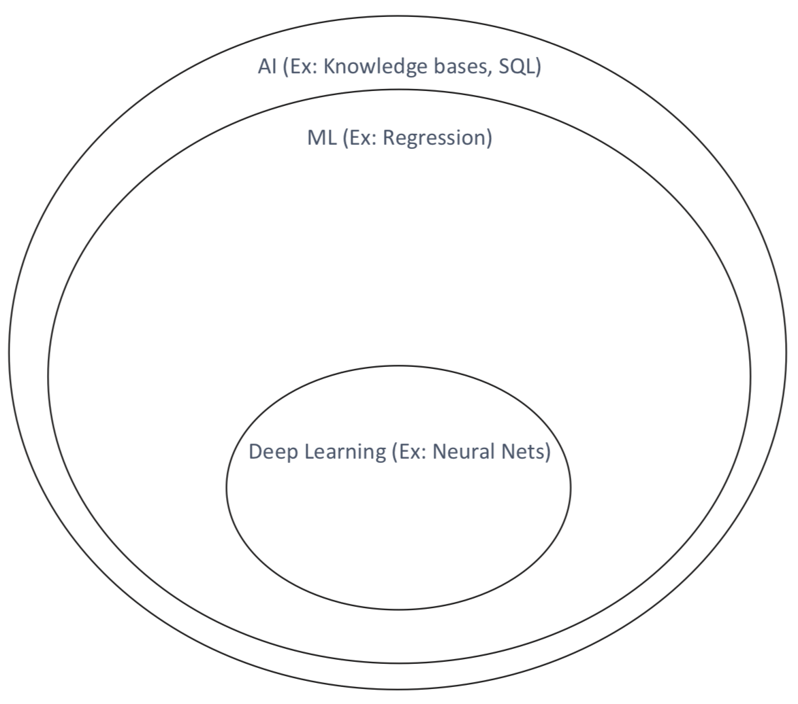
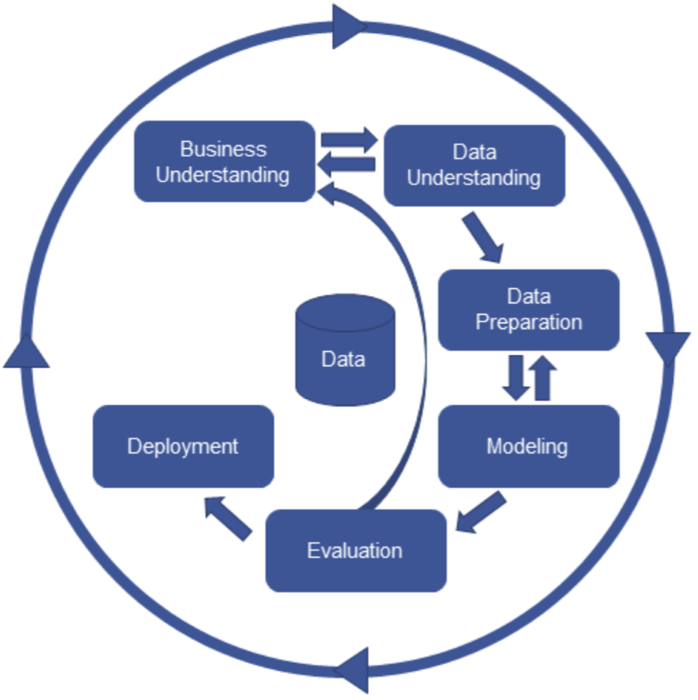
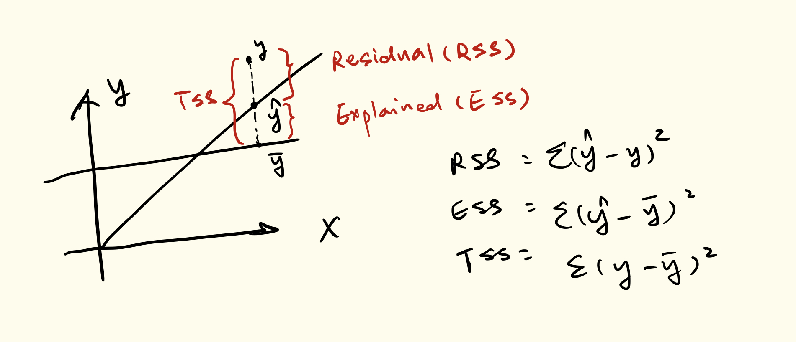
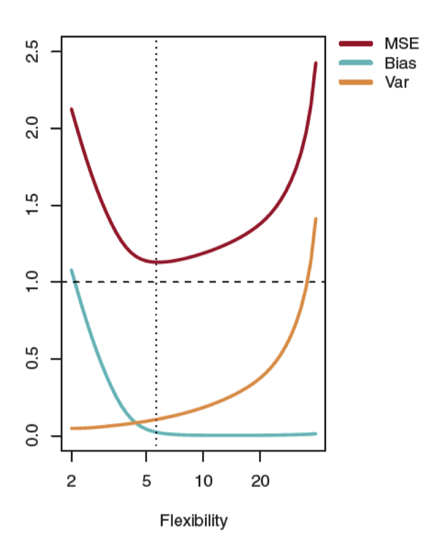
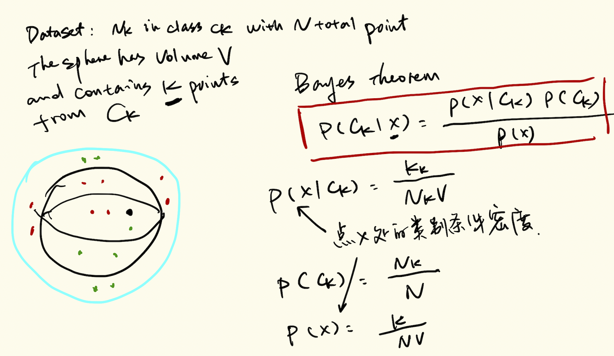
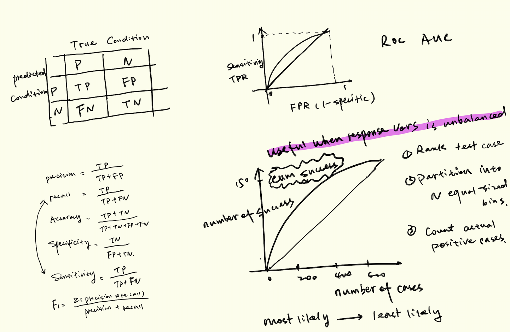
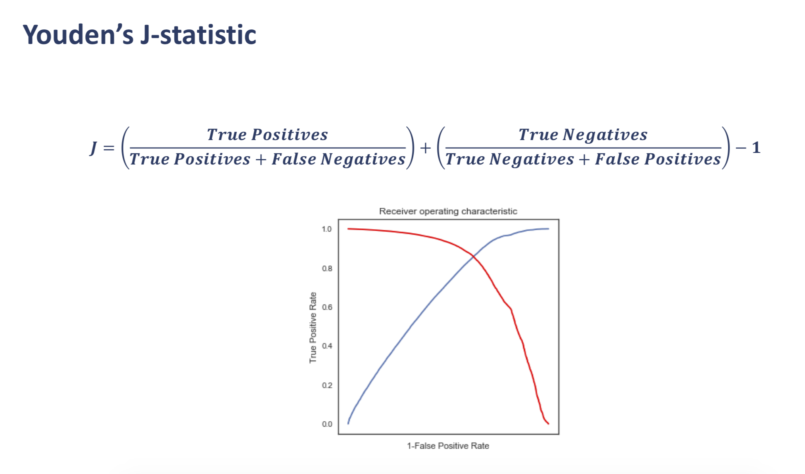
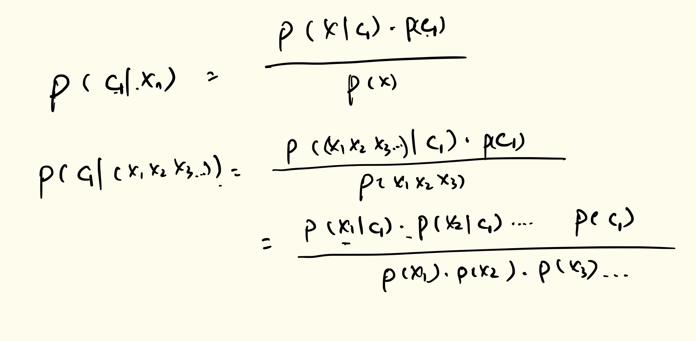
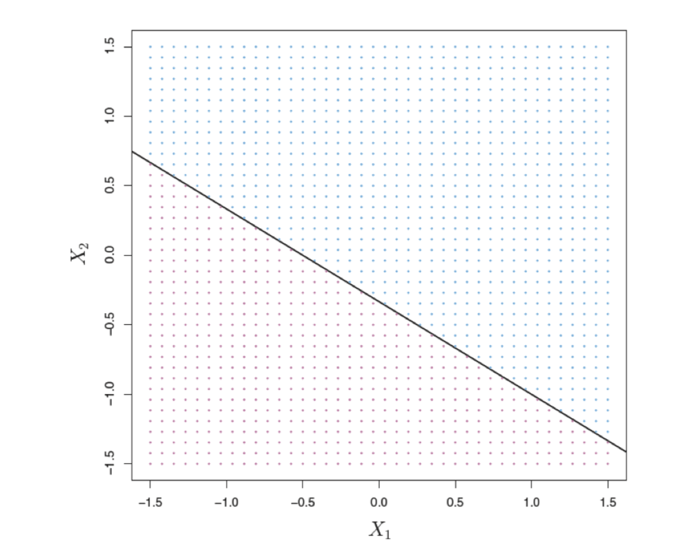
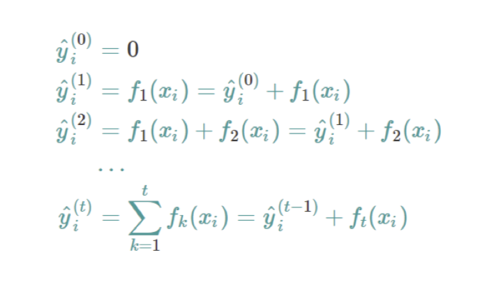

Reference from some lecture slides of INFSCI 2160 DATA MINING lectured by Matt Berezo
Introduction
- What is Artificial Intelligence?

The goal of machine learning/AI/data mining is to develop an algorithm that performs well on new, unseen inputs. The ability to perform well on previously unobserved inputs is called generalization
- Data Mining process

- Business undertanding is important
- Data understranding is important
Regression
- Simple linear regression involves 2 variables:
- A predictor variable, x
- A response variable, y
- $\hat{y_{i}}$ = Estimated prediction of y
- $\hat{\alpha}$ = Intercept
- $\hat{\beta_{i}}$ = coefficient/parameter
Goal: Obtain coefficient estimates that the linear model fits the available data well, and will also perform well (generalize) on unseen data
The least square approach
Coefficient Accuracy
We can compute the standard error of our coefficients
what is SE (standaed error)?
If the purpose is Descriptive, use standard Deviation; if the purpose is Estimation, use standard Error.
很容易混淆,我们拿到一个样本,对样本观察值离散程度的量化是$SD:sd(x)$; 而我们可以从很多个样本中得到很多个均值，这些均值的离散度用SE来量化,也就是$SE=sd(\bar{x})$
1 | ## generate 1000 sample with sample size 100 |
We have established that the average of $\hat{\mu}$ over many data sets will be very close to $\mu$, but that a single estimate $\hat{\mu}$ may be a substantial underestimate or overestimate of $\mu$. How far off will that single estimate of $\hat{\mu}$ be?
When we get the SE of parameters, we can calculate the 95% confidence interval
Standard errors can also be used to perform hypothesis tests on the coefficients. The most common hypothesis test involves testing the null hypothesis
- Null hypothesis(H0): there is no relationship between x and y
- Alternative hypothesis(Ha): there is a relationship between x and y
Mathematically, this corresponds to testing
To test the null hypothesis, we need to determine whether $\hat{β_{1}}$, our estimate for $\hat{β_{1}}$ , is sufficiently far from zero that we can be confident that $\hat{β_{1}}$ is non-zero
Model Accuracy
RSS: Residual Sum of Squares
RSE: Residual standard error
- R squared
How much better does your model do than simply using the mean, in terms of
SSE?- R-square takes form of a proportion and gives a value between 0 and 1 (1 = perfect model)
Multiple Linear Regression
- F-stat
If the F-stat is larger than 1 and the p-value is <= 0.05, we can determine that our predictors and model have a relationship with the response variable
- Where p = our number of predictors
- N = number of observations

- R-squared
Feature Selection
Stepwise Procedures
Backward Elimination
This is the simplest of all variable selection procedures and can be easily implemented without special software. In situations where there is a complex hierarchy, backward elimination can be run manually while taking account of what variables are eligible for removal.- Start with all the predictors in the model
- Remove the predictor with highest p-value greater than $\alpha$
- Refit the model and goto 2
- Stop when all p-values are less than $\alpha$
Forward Selection
This just reverses the backward method.- Start with no variables in the model.
- For all predictors not in the model, check their p-value if they are added to the model. Choose the one with lowest p-value less than αcrit .
- Continue until no new predictors can be added.
Ridge regression (i.e., L2 norm regulizar)
Ridge looks to minimize:
- $\lambda$ is a tuning parameter
Bias vs. Variance Trade-off
Ideally, we want to derive a model that has low bias, low variance, and low MSE on test data

Local Polynomial Regression
- The fitted value changes with x in a nonparametric manner
- Define a weight function so that only values within a smoothing window [𝑥0 - h(𝑥0 ), 𝑥0 + h(𝑥0 )] will be considered in the estimate of $\hat{y}$
Model Performance
Cross-validation
The goal of cross-validation is to test the model’s ability to predict new data that was not used in estimating it, in order to flag problems like overfitting or selection bias[6] and to give an insight on how the model will generalize to an independent dataset (i.e., an unknown dataset, for instance from a real problem).
Advantages of LOOCV
Advantages of LOOCV:
- Works well on small datasets
- Meticulously tests the data
Disadvantages of LOOCV:
- Computationally expensive on “big data” sets
- Can result in high variability since model is only tested on one observation
Overfitting
- Use cross-validation
- Ensemble/combine models together
- Use regularization techniques to penalize models that are too complex
Non-parametric Methods
Advantages of Non-parametric Methods:
- Do not assume an explicit form of f(x), so the model is more “flexible”
Disadvantages of Non-Parametric Methods:
- Often are more complex and thus more difficult to interpret
K Nearest-Neighbors
- KNN is a non-parametric method, vs. linear and logistic regression which are parametric approaches since they assume a linear functional form for f(x)

Accuracy and Error Rate


1 | import numpy as np |
Classification
Naïve Bayes
- a Naïve Bayes classifier assumes independence between features
- Naïve Bayes assumes that the continuous variables are normally distributed
- For continuous random variables, probabilities are areas under the curve

Decision Trees
Constructing Decision Trees for Regression
- First, we divide the predictor space into distinct and non-overlapping regions (𝑅1, 𝑅2,𝑅3 … 𝑅𝑛)
- To make a prediction, we typically use the mean of the training data in the region to which it belongs
How do we construct R1 and R2?
The goal is to find regions that minimize the residual sum of squares (RSS)
Decision trees can get too complex, memorize the training data, and overfit on test data
- It is advised to first build a very large tree and then prune it back to obtain a subtree
- Given a subtree, we can estimate the test error rate using cross-validation
- Cost complexity pruning i.e., weakest link pruning gives us the most efficient way to choose our subset of trees
Decision Trees Advantages and Disadvantages
Advantages:
- Trees are easy to explain and are intuitive
- Trees can be displayed graphically and are easy to interpret
- Trees can handle qualitative predictors without dummy variables
Disadvantages:
- Trees to not usually have the same level of predictive accuracy as other regression and classification methods
- Trees can be non-robust, i.e., a small change in the data can cause a large change in the tree
Bagging and Random Forests
Bootstrap aggregation, also known as bagging, is a procedure of reducing the variance of a statistical learning method
- This is a good way to reduce variance→by taking many training sets from the population and build
separate learning methods using each set - We can then calculate f1,f2,f3… and average them in order to obtain a low-variance
statistical model - We can do this by bootstrapping, or taking repeated random samples from the training set
Ensemble learning is a machine learning paradigm where multiple learners are trained to solve the same problem
Random forests provide an improvement over bagged trees by decorrelating them
- Like bagging, decision trees are made on bootstrapped training samples
- Random forests are an ensemble method for decision trees
- The difference is, each time a split in the tree is considered, a random sample of predictors is chosen as split candidates from the full set of predictors. So, at each split of the tree, the algorithm can’t even consider a majority of the predictors
Support Vector Machines
- SVM’s use a classifying tool called maximum margin classifier
- maximum margin classifiers can’t be applied to most datasets because they require the classes to be separated by a linear boundary
- Support vector classifiers are an extension of maximum margin classifiers that can be applied to a broader range of datasets
hyperplane
A hyperplane is a flat subspace in p-dimensional space with p – 1 dimensions

parameters
- C = a nonnegative tuning parameter
- C can be thought of as a budget for the amount the margin can be violated by n observations. If C = 0, there is no budget for violations to the margin
- large C, Overfitting
- small C, underfitting
What if the decision boundary for the two classes is not linear?
- enlarging the feature space with kernels
- A kernel is a function that quantifies the similarity between two observations
Multinomial Logistic Regression
- Similar to binary logistic regression, all probabilities in the output will sum to 1
- This is just an extension of the same math from logistic regression
Drawbacks
- Models involve many parameters, which makes their interpretation tedious
- Maximum-likelihood estimation can encounter numerical problems if the data is separable and if the predicted probabilities are close to either 0 or 1
XGBoost
overview
Advantages of XGBoost:
- Scalability: XGBoost system runs 10x faster than existing popular solutions on a single machine
- XGBoost accepts null values: users don’t have to impute missing values, drop records, etc.
- Less time spent on feature selection and more time spent on hyperparametric tuning
Typically, one tree is not as strong as an ensemble/combination of other trees. XGBoost uses an ensemble method to gather information from other trees.
Objective Function and Regularization
The additive function fixes what we have already learned, and adds one new tree at a time

But how do we choose which tree we want at each step?
We pick the one that optimizes our objective function! This is known as an additive function
Objective Functions
- Linear: Continuous numeric prediction
- Binary: logistic,binary classification
- Multi:softmax: multiclassification
Tree Boosting Parameters
Reference from https://www.cnblogs.com/sarahp/p/6900572.html
- Eta (i.e., learning rate): Step shrinkage use in update to prevent overfitting. After each boosting step, we can get
the weights of new features. Eta shrinks the weights to make the boosting process more conservative - Gamma: Minimum loss reduction required to make a further partition on a leaf node of a tree. Larger gamma = more conservative model (这个指定了一个结点被分割时，所需要的最小损失函数减小的大小)
- Max depth: Maximum depth of a tree. Increasing this value will make the model more complex (树的最大深度，值越大，树越复杂)
- Minimum child weight: Minimum sum of instance weight needed in a child. If the tree partition step results in a leaf node with the sum of instance weight less than this set parameter, the building process will stop partitioning. Larger weight = more conservative model (定义了一个子集的所有观察值的最小权重和)
- Subsample: A subsample ratio of the training instances. Setting to 0.5 would make XGBoost randomly sample half
of the training data prior to growing trees and will help prevent overfitting (样本的采样率，如果设置成0.5，那么Xgboost会随机选择一般的样本作为训练集) - Column sample by tree: Subsample ratio of columns when constructing a tree
- Column sample by level: Subsample ratio of columns for each level of the tree
- Column sample by node: Subsample ratio of columns for each node (split)
- Lambda: L2 regularization
- Alpha: L1 regularization
- Scale positive weight: Control the balance of positive and negative weights
REVIEW
What is the difference between boost, ensemble, bootstrap and bagging?
Reference from https://www.quora.com/What-is-the-difference-between-boost-ensemble-bootstrap-and-bagging
- Boosting is the idea of training iteratively the same “weak” classifier, so that at each iteration, the i-th classifier is supposed to correct the mistakes made by the previous classifier (i-1). It is done by weighting more the misclassified observations.
- The final classifier is calculated by a weighted mean of all the “weak” classifiers, the weights being close to the accuracies calculated for each classifier.
- Ensembling is quite general and encompasses simple methods like Averaging, and more complicated ones like Boosting, Bagging, Stacking, etc.
- Bootstrapping means taking a sample of a population by drawing with replacement. It is one of the main ideas behind Bagging (which stands for Bootstrap AGGregatING).
- Bagging means training the same classifier on different subsets (that may be overlapping) of one dataset. You do so with bootstrap.
RF vs XGBoost
Reference from https://www.cnblogs.com/sarahp/p/6900572.html
RF use bagging:
- 种集成学习算法，基于bootstrap sampling 自助采样法，重复性有放回的随机采用部分样本进行训练最后再将结果 voting 或者 averaging
- 它是并行式算法，因为不同基学习器是独立
- 训练一个bagging集成学习器时间复杂度与基学习器同阶（n倍，n为基学习器个数）。
- bagging可以用于二分类／多分类／回归
- 每个基学习器的未用作训练样本可用来做包外估计，评价泛化性能。
- bagging主要关注降低方差
- 两个步骤 1. 抽样训练（采样样本，采样特征） 2 融合
XGBoost use boosting(Gradient Boosting Decision Tree):
- gbdt的基本原理是boost 里面的 boosting tree（提升树），并使用 gradient boost。
- Gradient Boosting是一种Boosting的方法，其与传统的Boosting的区别是，每一次的计算是为了减少上一次的残差(residual)，而为了消除残差，可以在残差减少的梯度(Gradient)方向上建立一个新的模型。所以说，在Gradient Boosting中，每个新的模型的建立是为了使得之前模型的残差往梯度方向减少，与传统Boosting对正确、错误样本进行加权有着很大的区别。这个梯度代表上一轮学习器损失函数对预测值求导。
- 与Boosting Tree的区别：Boosting Tree的适合于损失函数为平方损失或者指数损失。而Gradient Boosting适合各类损失函数（损失函数为：平方损失则相当于Boosting Tree拟合残差、损失函数为：使用指数损失则可以近似于Adaboost，但树是回归树）